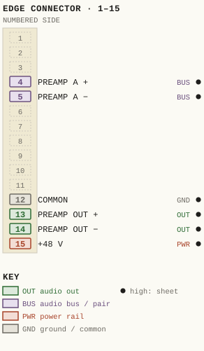
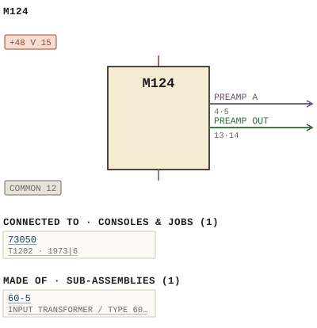

M124
| Type | module |
| Category | AMPLIFIERS |
| Try it | simulator & front panel · download package (zip) |
| Earliest dated evidence | 1968|1 — title-block date |
| Evidence | "DATE Aug 68" in PUBLIC/Manuals + tech DOCUMENTS/Modules/M124/124-09-001.jpg |
| Confidence | high |
| All years found | 1968|1 |
| Used in jobs | 73050 (1973|6) |
| Folder | Modules/AMPLIFIERS/M124 |
Connections and circuit (ideal SPICE model)
Drawn live from its RTO-144 connections: run the generator, turn the gain, watch the VU. Open the netlist to see how the model is built.
Pictures


M124.pinout.svg

M124.connections.svg 1968 - 124-09-001 - CONNECTOR WIRING - DRN C.S. O'CONNELL - ISS 1.jpg
1968 - 124-09-001 - CONNECTOR WIRING - DRN C.S. O'CONNELL - ISS 1.jpg 1968 - M124 - 124-09-001 - MIN BEND RAD UNLESS SPECIFED.jpg
1968 - M124 - 124-09-001 - MIN BEND RAD UNLESS SPECIFED.jpg 1968 - 124-09-001 - CONNECTOR WIRING - DRN C.S. O'CONNELL.jpg
1968 - 124-09-001 - CONNECTOR WIRING - DRN C.S. O'CONNELL.jpg 1968 - M124 - 124-02-001 - CLI IOOPH.jpg
1968 - M124 - 124-02-001 - CLI IOOPH.jpg 1968 - M124 - 124-02-001.jpg
1968 - M124 - 124-02-001.jpg 1968 - M124 - 124-06-001 - COMPONENT LAYOUT AMPLIFIER.jpg
1968 - M124 - 124-06-001 - COMPONENT LAYOUT AMPLIFIER.jpg 1968 - M124 - 124-06-001 - ICOMPONENT LAYOUT AMPLIFIER.jpg
1968 - M124 - 124-06-001 - ICOMPONENT LAYOUT AMPLIFIER.jpg 1968 - M124 - 124-09-001 - MIN BEND RAD UNLESS SPECIEIED.jpg
1968 - M124 - 124-09-001 - MIN BEND RAD UNLESS SPECIEIED.jpg 1968 - M124 - 2.jpg
1968 - M124 - 2.jpg 1968 - M124 - 20001.jpg
1968 - M124 - 20001.jpg 1968 - M124 - 3.jpg
1968 - M124 - 3.jpg 1968 - M124 - IMG_0172.jpg
1968 - M124 - IMG_0172.jpg 1968 - M124 - IMG_0173.jpg
1968 - M124 - IMG_0173.jpg 1968 - M124 - IMG_0174.jpg
1968 - M124 - IMG_0174.jpg 1968 - M124 - IMG_0175.jpg
1968 - M124 - IMG_0175.jpg 1968 - M124 - IMG_0176.jpg
1968 - M124 - IMG_0176.jpg 1968 - M124 - IMG_0177.jpg
1968 - M124 - IMG_0177.jpg 1968 - M124 - IMG_0178.jpg
1968 - M124 - IMG_0178.jpg 1968 - M124 - IMG_0179.jpg
1968 - M124 - IMG_0179.jpg 1968 - M124 - IMG_0180.jpg
1968 - M124 - IMG_0180.jpg 1968 - M124 - IMG_0181.jpg
1968 - M124 - IMG_0181.jpg 1968 - M124 - IMG_0182.jpg
1968 - M124 - IMG_0182.jpg 1968 - M124 - IMG_0183.jpg
1968 - M124 - IMG_0183.jpg 1968 - M124 - IMG_0184.jpg
1968 - M124 - IMG_0184.jpg 1968 - M124 - IMG_0185.jpg
1968 - M124 - IMG_0185.jpg 1968 - M124 - IMG_0186.jpg
1968 - M124 - IMG_0186.jpg 1968 - M124 - IMG_0187.jpg
1968 - M124 - IMG_0187.jpg 1968 - M124 - IMG_0188.jpg
1968 - M124 - IMG_0188.jpg 1968 - M124 - IMG_0189.jpg
1968 - M124 - IMG_0189.jpg 1968 - M124 - IMG_0190.jpg
1968 - M124 - IMG_0190.jpg 1968 - M124 - IMG_0191.jpg
1968 - M124 - IMG_0191.jpg 1968 - M124 - IMG_0192.jpg
1968 - M124 - IMG_0192.jpg 1968 - M124 - IMG_0193.jpg
1968 - M124 - IMG_0193.jpg 1968 - M124 - IMG_0194.jpg
1968 - M124 - IMG_0194.jpg 1968 - M124 - IMG_0195.jpg
1968 - M124 - IMG_0195.jpg 1968 - M124 - IMG_0196.jpg
1968 - M124 - IMG_0196.jpg 1968 - M124 - IMG_0197.jpg
1968 - M124 - IMG_0197.jpg 1968 - M124 - IMG_0198.jpg
1968 - M124 - IMG_0198.jpg 1968 - M124 - IMG_0199.jpg
1968 - M124 - IMG_0199.jpg 1968 - M124 - IMG_0200.jpg
1968 - M124 - IMG_0200.jpg 1968 - M124 - IMG_0201.jpg
1968 - M124 - IMG_0201.jpg 1968 - M124 - IMG_0202.jpg
1968 - M124 - IMG_0202.jpg 1968 - M124 - IMG_0203.jpg
1968 - M124 - IMG_0203.jpg 1968 - M124 - IMG_0204.jpg
1968 - M124 - IMG_0204.jpg 1968 - M124 - IMG_0205.jpg
1968 - M124 - IMG_0205.jpg 1968 - M124 - IMG_0206.jpg
1968 - M124 - IMG_0206.jpg 1968 - M124 - IMG_0207.jpg
1968 - M124 - IMG_0207.jpg 1968 - M124 - IMG_0208.jpg
1968 - M124 - IMG_0208.jpg 1968 - M124 - IMG_0209.jpg
1968 - M124 - IMG_0209.jpg 1968 - M124 - IMG_0210.jpg
1968 - M124 - IMG_0210.jpg 1968 - M124 - IMG_0211.jpg
1968 - M124 - IMG_0211.jpg 1968 - M124 - IMG_0212.jpg
1968 - M124 - IMG_0212.jpg 1968 - M124 - IMG_0213.jpg
1968 - M124 - IMG_0213.jpg 1968 - M124 - IMG_0214.jpg
1968 - M124 - IMG_0214.jpg 1968 - M124 - IMG_0215.jpg
1968 - M124 - IMG_0215.jpg 1968 - M124 - IMG_0216.jpg
1968 - M124 - IMG_0216.jpg 1968 - M124 - IMG_0217.jpg
1968 - M124 - IMG_0217.jpg 1968 - M124 - IMG_0218.jpg
1968 - M124 - IMG_0218.jpg 1968 - M124 - IMG_0219.jpg
1968 - M124 - IMG_0219.jpg 1968 - M124 - IMG_0220.jpg
1968 - M124 - IMG_0220.jpg 1968 - M124 - IMG_0221.jpg
1968 - M124 - IMG_0221.jpg 1968 - M124 - P1010036_53.jpg
1968 - M124 - P1010036_53.jpg 1968 - M124 - P1010037_53.jpg
1968 - M124 - P1010037_53.jpg 1968 - M124 - WARD-BECK M124 layout.jpg
1968 - M124 - WARD-BECK M124 layout.jpg 1968 - M124 - WARD-BECK M124 parts 1.jpg
1968 - M124 - WARD-BECK M124 parts 1.jpg 1968 - M124 - WARD-BECK M124 parts 2.jpg
1968 - M124 - WARD-BECK M124 parts 2.jpg 1968 - M124 - WARD-BECK M124.jpg
1968 - M124 - WARD-BECK M124.jpg 1968 - M124 - WBS M1240001.jpg
1968 - M124 - WBS M1240001.jpg 1968 - M124 - WBSPS - Ward Beck Module - M124 Line Amplifer 001.jpg
1968 - M124 - WBSPS - Ward Beck Module - M124 Line Amplifer 001.jpg 1968 - M124 - WBSPS - Ward Beck Module - M124 Line Amplifer.jpg
1968 - M124 - WBSPS - Ward Beck Module - M124 Line Amplifer.jpg 1968 - M124 - Ward Beck Systems 124 a copy.jpg
1968 - M124 - Ward Beck Systems 124 a copy.jpg 1968 - M124 - Ward Beck Systems 124 b.jpg
1968 - M124 - Ward Beck Systems 124 b.jpg 1968 - M124 - Ward Beck Systems 124 spec sheet.jpg
1968 - M124 - Ward Beck Systems 124 spec sheet.jpg 1968 - M124 - file.jpg
1968 - M124 - file.jpg 1968 - M124 - p2.jpg
1968 - M124 - p2.jpg 1968 - M124 - p3.jpg
1968 - M124 - p3.jpg 1968 - M124 - p4.jpg
1968 - M124 - p4.jpg 1968 - M124 - recap.jpg
1968 - M124 - recap.jpg 1968 - M124 - used as line input.png
1968 - M124 - used as line input.png 1968 - M124 - used as mic input.png
1968 - M124 - used as mic input.png 1968 - M124 - wbsps - module - m124 audio amp - back.jpg
1968 - M124 - wbsps - module - m124 audio amp - back.jpg 1968 - M124 - wbsps - module - m124 audio amp - front.jpg
1968 - M124 - wbsps - module - m124 audio amp - front.jpg 1968 - M124 - wbsps - module - m124 audio amp - front_small.jpg
1968 - M124 - wbsps - module - m124 audio amp - front_small.jpg 1968 - M124 - wbsps - module - m124 audio amp.jpg
1968 - M124 - wbsps - module - m124 audio amp.jpg 1968 - M124 - wbsps - promo - m124 audio amp - back.jpg
1968 - M124 - wbsps - promo - m124 audio amp - back.jpg 1968 - M124 - wbsps - promo - m124 audio amp - back_small.jpg
1968 - M124 - wbsps - promo - m124 audio amp - back_small.jpg 1968 - M124 - wbsps - promo - m124 audio amp - front.jpg
1968 - M124 - wbsps - promo - m124 audio amp - front.jpg 1968 - M124 - wbsps - promo - m124 audio amp - full.jpg
1968 - M124 - wbsps - promo - m124 audio amp - full.jpg 1968 - M124 - wbsps - promo - m124 audio amp.jpg
1968 - M124 - wbsps - promo - m124 audio amp.jpg 1968 - M124 - wbsps - promo - m124 audio amp_small.jpg
1968 - M124 - wbsps - promo - m124 audio amp_small.jpg 19xx - M124 - Ward Beck Model M124 Line Amplifier.jpg
19xx - M124 - Ward Beck Model M124 Line Amplifier.jpg WARD-BECK M124 layout.jpg
WARD-BECK M124 layout.jpg 1973 - 73050 - 0003.jpeg
1973 - 73050 - 0003.jpeg 19xx - M1022 - wbsps - promo - m1022 console 006 (2).jpg
19xx - M1022 - wbsps - promo - m1022 console 006 (2).jpg 19xx - M1022 - wbsps - promo - m1022 console 006.jpg
19xx - M1022 - wbsps - promo - m1022 console 006.jpg 1971 - AD - 71050 - 20170522_122029_021 - PHOTO.jpg
1971 - AD - 71050 - 20170522_122029_021 - PHOTO.jpgPinout & connections
Each contact as its own documents name it: 6 named (6 high confidence). An empty slot is a contact no page names. Hover a contact for its source; the table under the drawing lists them.
pinout (SVG) · connections (SVG) · pins (JSON)
Pin evidence — 6 contacts
| Pin | Signal | Kind | Confidence | Read from | Source |
|---|---|---|---|---|---|
| 4 | PREAMP A | audio bus / pair | high | rto-144 | M124.rto144.json, p. 1 |
| 5 | PREAMP A | audio bus / pair | high | rto-144 | M124.rto144.json, p. 1 |
| 12 | COMMON | ground / common | high | rto-144 | M124.rto144.json, p. 1 |
| 13 | PREAMP OUT | audio out | high | rto-144 | M124.rto144.json, p. 1 |
| 14 | PREAMP OUT | audio out | high | rto-144 | M124.rto144.json, p. 1 |
| 15 | +48 V | power rail | high | rto-144 | M124.rto144.json, p. 1 |
Dates found in the documents
| Year | Kind | Text | File |
|---|---|---|---|
| 1968|1 | title-block date | DATE Aug 68 |
1968 - 124-09-001 - CONNECTOR WIRING - DRN C.S. O'CONNELL - ISS 1.jpg |
| 1968|1 | title-block date | DATE Aug 68 |
1968 - M124 - 124-09-001 - MIN BEND RAD UNLESS SPECIFED.jpg |
| 1968|1 | title-block date | DATE Aug 68 |
1968 - M124 - WBS_M124_Docs.pdf |
| 1968|1 | title-block date | DATE Aug 68 |
1968 - M124 - WBS_M124_Docs.pdf |
Physical manual inventory
| Item | Location | Status | Scanned |
|---|---|---|---|
| M124 | Recently scanned and stiched by WB |
Documents (1)
| Year | File | |
|---|---|---|
| 1968|1 | 1968 - M124 - WBS_M124_Docs.pdf | note |
Photos & scans (92)


Sub-assemblies & parts used (1)
| Item | What | Family | Year | How we know |
|---|---|---|---|---|
| 60-5 | INPUT TRANSFORMER / TYPE 60-5 | Input transformers (60-n) | 1968|1 | named in its manual |
Consoles & jobs it is connected to (1)
Their own drawings name this module.
| Job | Year | Drawing | Page |
|---|---|---|---|
| 73050 | 1973|6 | 1973 - 73050 - 0003.jpeg | 1 |
Named in other drawings & documents (18)


From the manuals
Each manual split into its sections. Text that is the same in many Ward-Beck manuals (warranty, address, standard notes) is kept once on the Boilerplate page and linked.
General description (3)
Description — 202 words · 1968 - M124 - Ward Beck Systems 124 a copy.jpg, page 1
The M124 is a high performance audio amplifier designed to offer optimum flexibility with minimum space occupancy for custom console applications in the broadcast and sound recording industries_ The unit exhibits low input noise (-124 dbm) high output capability (1 watt) , uniform frequency res- ponse and exceptionally low total harmonic distortion. In addition, the M124 printed circuit module measures only 3V2 x 57 x 1-3/8 (component width) and includes a specially designed input transformer for multiple source impedance operation.
FEATURES: Multiple source impedance selection via low-noise input transformer. Conditional gain strapping on frame receptacle: Extremely low equivalent input noise_ unique active, balanced output circuit permits totally balanced systems design without the use of bulky output transformers and the attendent distortion introduced by such components at high output levels. The low impedance presented at the amplifier output terminals permits the use of multiple resistive splitting networks with maximum isolation between output lines_ High output capability (1 watt) Conditional strapping is accomplished on the card connector: Thus, M124 modules may be readily interchanged within a system without regard to function: An entire console system (monitor amplifiers excepted) may be designed around the M124 plug-in card: Very low output impedance Actively balanced output circuitry
- source: 1968 - M124 - Ward Beck Systems 124 a copy.jpg, p. 1
Description — 201 words · 1968 - M124 - wbsps - promo - m124 audio amp - front.jpg, page 1
The M124 is a high performance audio amplifier designed to offer optimum flexibility with minimum space occupancy for custom console applications in the broadcast and sound recording industries. The unit exhibits low input noise (-124 dbm) high output capability (1 watt), uniform frequency res- ponse and exceptionally low total harmonic distortion. In addition, the M124 printed circuit module measures only 3V x 5l2 x 1-3/8 (component width) and includes a specially designed input transformer for multiple source impedance operation: FEATURES: Multiple source impedance selection via low-noise input transformer Conditional gain strapping on frame receptacle Extremely low equivalent input noise.
A unique active, balanced output circuit permits totally balanced systems design without the use of bulky output transformers and the attendent distortion introduced by such components at high output levels. The low impedance presented at the amplifier output terminals permits the use of multiple resistive splitting networks with maximum isolation between output lines: High output capability (1 watt) Conditional strapping is accomplished on the card connector.
Thus, M124 modules may be readily interchanged within system without regard to function: An entire console system (monitor amplifiers excepted) may be designed around the M124 plug-in card: Very low output impedance Actively balanced output circuitry
- source: 1968 - M124 - wbsps - promo - m124 audio amp - front.jpg, p. 1
Description — 177 words · 1968 - M124 - wbsps - module - m124 audio amp - front.jpg, page 1
The M124 hugh nerfarmance audia ampliliet designed offer optimum flexibility with Sulcl occupancy f0 custom console applications the' broadcas Jlid sourd recording industries exhihits Iow arput noise 124 dbrl hurgh outpUt Capability watt nmorm frenliency res ponse and excentionally Toa harmonic Mastortinn In addition; tnc M124 printed circuit module measurus rly 3V1 13/8 (component wlth/ and includes 'specially desiyned inpul Hanctorici for multiple SOUICC unpedance operation FEATURES: Multiple source impedance selection via law-noise inpul transtormer; Conditional gain strapping on ramte Tecentacie Extremely low equivalent input MOISC unique active balanced output circuil perrits tolallv balanced systems desigu wilhoul bulky outpul transformers and attenren distortion intraduced hy such camnonents high output Jevel; T"e Iov imnerance Sentem amolute output terminals pCrInits Ihe Use 0f multiple resistive splitting retworks Wih maximum isolation between Duiouans High oulpul capability watt) Conritional strapping accomplisheu @I tC Curd cunnccioi Thus; M124 matules may De readily Interchanged within system without regard ta function: An entire console systern (monitor amplifiers excepted) may be designed around the M124 plug-in card, Very low output impedance Actively balanced output circuitry
Specifications (7)
Technical Data — 340 words · 1968 - M124 - p2.jpg, page 1
TRANSDUCER GAIN 48.4 46 Kik 6201 45-6Odb _ 0.Sdb (conditional strapping on edge connector) FREQUENCY RESPONSE +0 25db From 2Ohz to 20khz ~0.4d8 @ 10 i? & 4skte EQUIVALENT INPUT NOISE ~124dbm ( 1Ohz to 1OOKhz bandwidlh) -127dbm (?Ohz to 20Khz bandwidlh) HARMONIC DISTORTION 1Mb @ 0481 0.03.2 Less than 25% from 30hz to 20Khz Less than 0.5 from 20hz to 20Khz (Mieasured at wall outpul level) M 24 AUDIO AMPLIFIER The M124 is a high performance audio amplifier designed to offer optimum flexibi ility with minimum space occupancy for custom console applications in the broadcast and sound recording industries The unit exhibits low input noise (-124 dbm) high output capabi ility (1 watt) , uniform frequency response and exceptionally low total harmonic distortion In addition, the M124 printed circuit module 32 X 5k X measures only 3/8 (component width) and includes specially designed input transformer for multiple source impedance operation_ SOURCE IMPEDANCE 37.5/150/600 ohms balanced unbalanced INPUT IMPEDANCE Greater than 10 source impedance INPUT LEVEL -16 dbm maximum unique active , balanced output circuit permits totally balanced systems design without the use of bulky output transformers and the attendent distortion introduced by such components at high output levels _ The low impedance presented at the amplifier output terminals permits the use of multiple resisti ve splitting networks with maximum isolation between output lines LOAD IMPEDANCE 150 ohms Or higher (nominal 600 ohms) OUTPUT IMPEDANCE Less than /10 load impedance OUTPUT LEVEL J3Odbm , wvall maximum 28.6 081^ C ?
TFA 20. Sz1 6 Vp LEvEz The- SNterminal number of the input pair and the low terminal number of the outpul pair are in phase: Conditional strapping is accomplished on the card connector Thus, M124 modules may be readily interchanged within a system without regard to function. An entire console system (monitor amplifiers excepted) may be designed around the M124 plug-in card_ POWER REQUIREMENTS 48 volts dc regulated, 100 mA wvall outpul level AMBIENT TEMPERATURE 00 to 608c DIMENSIONS PC Card 3XSX 3/8W in.
WEIGHT 2 lbs net A T
- source: 1968 - M124 - p2.jpg, p. 1
Technical Data — 327 words · 1968 - M124 - wbsps - promo - m124 audio amp.jpg, page 1
TRANSDUCER GAIN 45-60db $ 0.5db (conditional strapping on edge connector) FREQUENCY RESPONSE 40. 25db from 2Ohz to 20Khz EQUIVALENT INPUT NOISE ~124dbm (1Ohz to 1OOKhz bandwidth) ~127dbm (2Ohz to 20Khz bandwidth) 124 AUDIO AMPLIFIER HARMONIC DISTORTION Less than 0.25% from 3Ohz to 20Khz_ Less than 0.5% from 2Ohz to 20Khz (Measured at watt output level) The M124 is high performance audio amplifier designed to offer optimum flexibility with minimum space occupancy for custom console applications in the broadcast and sound recording industries_ The unit exhibits low input noise (-124 dbm) high output capability (1 watt) , uniform frequency response and exceptionally low total harmonic distortion In addition, the M124 printed circuit module measures only 37 X 5% X 1 3/8 (component width) and includes a specially designed input transformer for multiple source impedance operation.
SOURCE IMPEDANCE 37.5/150/600 ohms balanced or unbalanced INPUT IMPEDANCE Greater than X 10 source impedance INPUT LEVEL -16 dbm maximum A unique acti ve , balanced output circuit permits totally balanced systems design without the use of bulky output transformers and the attendent distortion introduced by such components at high output levels The low impedance presented at the amplifier output terminals permits the use of multiple resistive splitting networks with maximum isolation between output lines_ LOAD IMPEDANCE 150 ohms or higher (nominal 600 ohms) OUTPUT IMPEDANCE Less than /10 load impedance OUTPUT LEVEL +3Odbm , watt maximum Conditional strapping is accomplished on the card connector Thus , M124 modules may be readily interchanged within a system wit thout regard to function An entire console system (monitor amplifiers excepted) may be designed around the M124 plug-in card PHASING The low terminal number of the input pair and the low terminal number of the output pait r are in phase: POWER REQUIREMENTS 48 volts dc regulated , 100 mA at watt output level AMBIENT TEMFERATURE 00 to 60 DIMENSIONS PC Card 3k X 5k X 1 3/8W in.
WEIGHT 2 Ibs net C A T
- source: 1968 - M124 - wbsps - promo - m124 audio amp.jpg, p. 1
Technical Data — 321 words · 1968 - M124 - Ward Beck Systems 124 spec sheet.jpg, page 1
TRANSDUCER GAIN 45-6Odb + 0.Sdb (conditional strapping on edge connector) FREQUENCY RESPONSE +0. 25db from 20hz to 20Khz EQUIVALENT INPUT NOISE ~124dbm (1Ohz to 1OOKhz bandwidth) -127dbm (2Ohz to 20Khz bandwidth) M 124 AUDIO AMPLIFIER HARMONIC DISTORTION Less than 0.25% from 3Ohz to 20Khz Less than 0.5% from 2Ohz to 20Khz (Measured at watt output level) The M124 is a high performance audio amplifier designed to offer optimum flexibility with minimum space occupancy for custom console applications in the broadcast and sound recording industries: The unit exhibits low input noise (-124 dbm) high output capabi" lity (1 watt) , uniform frequency response and exceptionally low total harmonic distortion In addition, the M124 printed circuit module measures Only 37 X 5h X 1 3/8 (component width) and includes a specially designed input transformer for multiple source impedance operation_ SOURCE IMPEDANCE 37.5/150/600 ohms balanced or unbalanced INPUT IMPEDANCE Greater than X 10 source impedance INPUT LEVEL -16 dbm maximum A unique active, balanced output circuit permits totally balanced systems design without the use of bulky output transformers and the attendent distortion introduced by such components at high output levels The low impedance presented at the amplifier output terminals permits the use of multiple resistive splitting networks with maximum isolation between output lines_ LOAD IMPEDANCE 150 ohms or higher (nominal 600 ohms) OUTPUT IMPEDANCE Less than 1/10 load impedance OUTPUT LEVEL +3Odbm , watt maximum Conditional strapping is accomplished on the card connector Thus, M124 modules may be readily interchanged within system without regard to function An entire console system (monitor amplifiers excepted) may be designed around the M124 plug-in card PHASING The low terminal number of the input pair and the low terminal number of the output pair are in phase POWER REQUIREMENTS 48 volts dc regulated_ 100 mA at watt output level AMBIENT TEMPERATURE 0O to 60Oc DIMENSIONS PC Card 37 X 5x X 1 3/8W in.
WEIGHT Ibs net C AT
- source: 1968 - M124 - Ward Beck Systems 124 spec sheet.jpg, p. 1
- also in: 1968 - M124 - wbsps - module - m124 audio amp.jpg, p. 1 · 1968 - M124 - Ward Beck Systems 124 b.jpg, p. 1 · 1968 - M124 - wbsps - promo - m124 audio amp - back.jpg, p. 1 · 1968 - M124 - wbsps - module - m124 audio amp - back.jpg, p. 1
Drawings (12)
Each scan with its trace laid over it: the slider runs from the scan to the vector drawing. Click one to see it large and save it as SVG, DXF, KiCad, PDF or PowerPoint.
Cli Ioophviewer
1968 - M124 - 124-02-001viewer
Component Layout Amplifierviewer
Icomponent Layout Amplifierviewer
Min Bend Rad Unless Specieiedviewer
Bend Rad' Unless Specifiedviewer
M124 CONNECTOR WIRINGviewer
M124 CONNECTOR WIRINGviewer
Ward Beck Model M124 Line Amplifierviewer
WARD-BECK M124 layoutviewer
Read from the drawing title blocks.
| Drawing | Title | Date | Drawn by | Checked by | Iss. | Source |
|---|---|---|---|---|---|---|
| — | Considered Hish | 1968|1 | file p.7 | |||
| — | Censidered Hish Number | 1968|1 | file p.8 | |||
| B 124-09-001 | M124 CONNECTOR WIRING | 1968|1 | RBJ | 1 | file | |
| B 124-09-001 | M124 CONNECTOR WIRING | 1968|1 | file | |||
| — | file | |||||
| — | Ward Beck Model M124 Line Amplifier | file | ||||
| 124-02-001 | file | |||||
| 124-02-001 | Cli Iooph | file | ||||
| 124-06-001 | Component Layout Amplifier | file | ||||
| 124-06-001 | Icomponent Layout Amplifier | file | ||||
| 124-09-001 | Min Bend Rad Unless Specifed | file | ||||
| 124-09-001 | Min Bend Rad Unless Specieied | file |